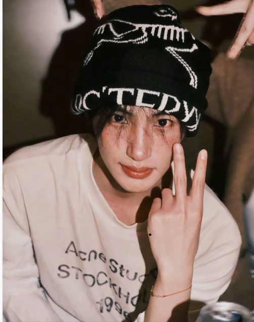

看了许许多多的短剧，大多只是流于外表、偏向颜值，而认识张翅，是完全不一样的感受。初次留意到你，大概是在2025年12月，偶然观看《双向欲臣》这部作品，那时只觉得，这个少年干净又帅气，让人一眼记住。

后来在上个学期，偶然点开你的直播，温柔的氛围满满的女友视角，安静又治愈。这个学期里，慢慢看了很多场你的直播，也一点点更加了解真实、鲜活的你。
张翅，2001年10月22日出生于河南省，是中国内地优秀的影视男演员。早在高中时期，你便坚定了演员的理想与方向，从横店普通群演一步步沉淀、打拼，慢慢踏入演艺圈，脚踏实地走好每一段来时路。
生活里的你温柔又细腻，养了一只可爱的白色西高地小狗，取名“帅哥”，常常在社交平台分享小狗的日常，温柔又治愈；闲暇之余，还会亲自下厨，分享生活里的烟火气，真实又温柔。
代表作丰富多样，先后出演《那年冬至》《一家三口在同班2》《抄家后她娇入骨，战神王爷偏要宠》《暗恋是颗星星糖》《走过路过之原来他也喜欢我》等作品，不断打磨演技，突破自己。
从默默无闻的群演，到被越来越多人看见和喜欢，一路默默努力，温柔且坚定。愿往后的日子里，翅翅永远被温柔以待，不被恶意打扰，保持热爱，奔赴山海。
愿你平安顺遂，开开心心，健健康康，星光璀璨，前路漫漫亦灿灿，会有越来越多的人喜欢你、守护你。#向全世界安利张翅#